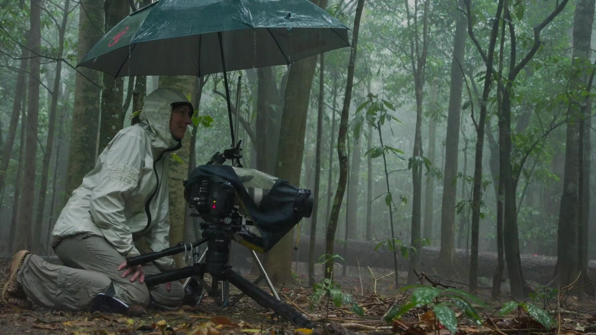

Il Cinema Documentario: Realtà e Retorica
Un documentario non è una semplice registrazione della realtà, ma un'opera che dichiara di presentare informazioni reali sul mondo. I documentari possono usare due forme principali:
- Forma Categoriale: Il film organizza le informazioni in categorie (es. un documentario sugli animali diviso per specie).
- Forma Retorica: Il regista vuole convincerci di un'opinione (es. un documentario sull'inquinamento che ci spinge a cambiare abitudini). In questo caso, il film usa prove e argomentazioni per influenzare il pubblico.
